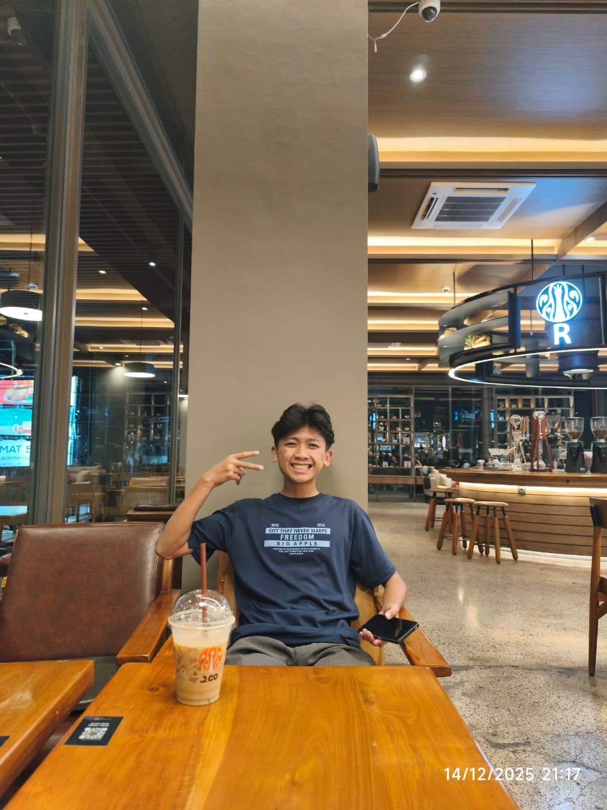

Halo! Saya Irsyad Farras Al Farisyi, mahasiswa di STT Terpadu Nurul Fikri dengan Program Studi Teknik Informatika yang berfokus pada pengembangan solusi digital yang inovatif dan efisien. Orangnya Tamvan, bisa ngaji, keren dah pokoknya
